맵
맵 722곳을 대륙과 마을별로 묶었어요. 몬스터, 레벨대, 필요 명중, 얻을 수 있는 아이템을 확인해요.
메이플 아일랜드 6곳
암허스트 6곳
빅토리아 아일랜드 183곳
헤네시스 19곳
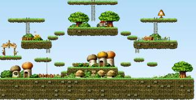
헤네시스 북쪽언덕Lv.2~8 · 몬스터 5종파란 달팽이, 스포아, 빨간 달팽이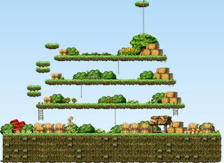
헤네시스사냥터1Lv.2~7 · 몬스터 4종스포아, 파란 달팽이, 빨간 달팽이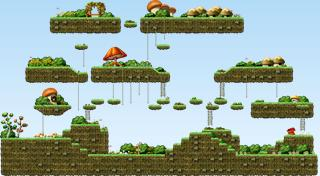
헤네시스서쪽언덕Lv.4~7 · 몬스터 3종빨간 달팽이, 슬라임, 돼지 여섯갈래길Lv.6~8 · 몬스터 3종슬라임, 돼지, 주황버섯 머쉬맘의 오솔길Lv.7~10 · 몬스터 2종돼지, 리본 돼지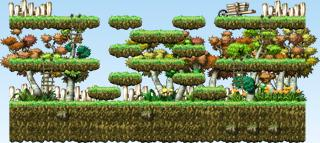
콧노래 오솔길Lv.7~10 · 몬스터 2종돼지, 리본 돼지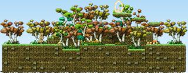
포자언덕Lv.7~8 · 몬스터 2종돼지, 주황버섯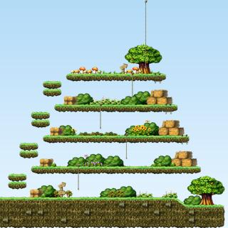
헤네시스사냥터2Lv.7~15 · 몬스터 4종돼지, 주황버섯, 리본 돼지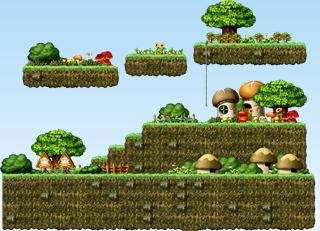
꿈꾸는 오솔길Lv.8 · 몬스터 1종시니컬한 주황버섯 장로스탄의 집Lv.8~15 · 몬스터 2종주황버섯, 초록버섯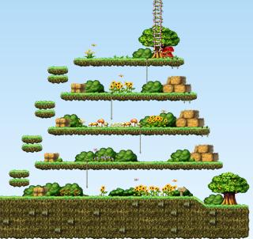
헤네시스사냥터3Lv.8~15 · 몬스터 3종주황버섯, 리본 돼지, 초록버섯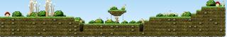
리나의 집Lv.15~20 · 몬스터 2종초록버섯, 파란버섯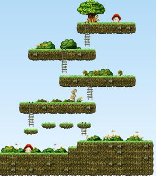
장롱이 떨어진 집Lv.20~22 · 몬스터 2종파란버섯, 뿔버섯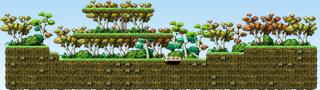
파란버섯의 숲Lv.20~22 · 몬스터 2종파란버섯, 뿔버섯 남의집Lv.22~60 · 몬스터 2종뿔버섯, 머쉬맘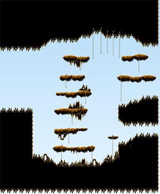
궁수의개미굴Lv.35 · 몬스터 2종이블아이, 좀비버섯 궁수의개미굴Lv.35 · 몬스터 2종이블아이, 좀비버섯
궁수의개미굴Lv.35 · 몬스터 2종이블아이, 좀비버섯
궁수의개미굴Lv.35 · 몬스터 2종이블아이, 좀비버섯
궁수의개미굴Lv.35 · 몬스터 2종이블아이, 좀비버섯
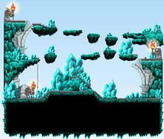
차원의세계Lv.80 · 몬스터 1종헬레나의 분신엘리니아 32곳
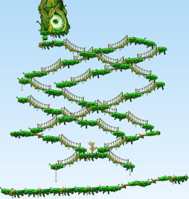
빛나는 숲의 통로Lv.4~6 · 몬스터 2종빨간 달팽이, 슬라임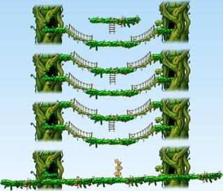
숲이 시작하는 곳Lv.4~6 · 몬스터 2종빨간 달팽이, 슬라임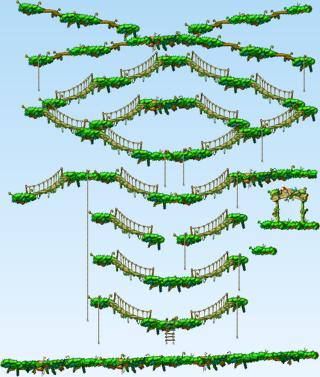
엘리니아남쪽필드Lv.4~15 · 몬스터 3종스텀프, 슬라임, 초록버섯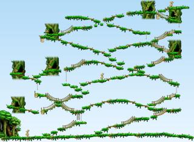
골렘의 사원 입구Lv.6~10 · 몬스터 2종슬라임, 다크 스텀프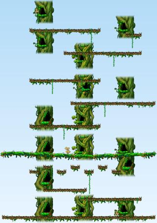
골렘의 사원1Lv.6 · 몬스터 1종슬라임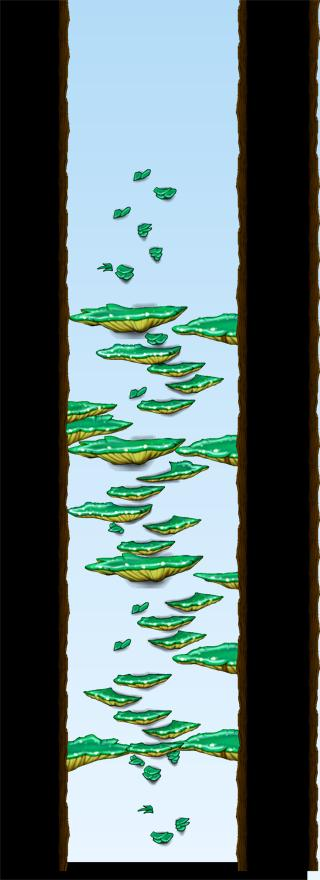
남쪽숲나무던전1Lv.6 · 몬스터 1종슬라임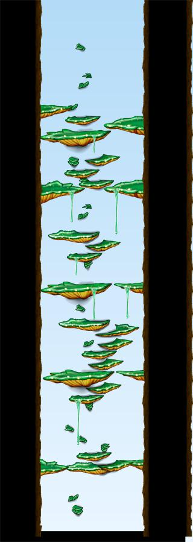
남쪽숲나무던전2Lv.6 · 몬스터 1종슬라임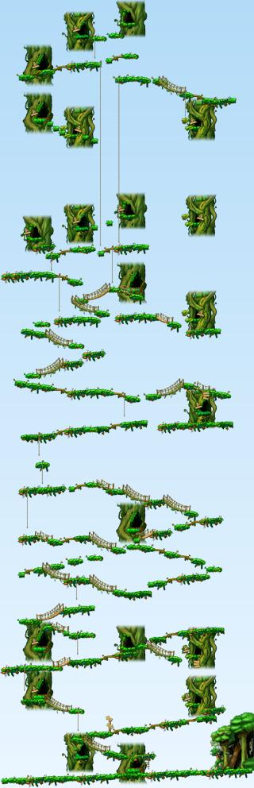
바람과 가까운 곳Lv.6~10 · 몬스터 2종슬라임, 다크 스텀프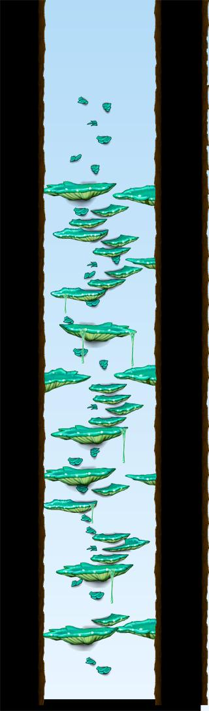
북쪽숲나무던전1Lv.6 · 몬스터 1종슬라임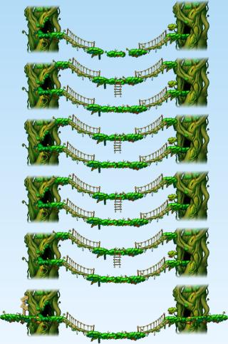
솟아오른나무2Lv.6~10 · 몬스터 2종슬라임, 다크 스텀프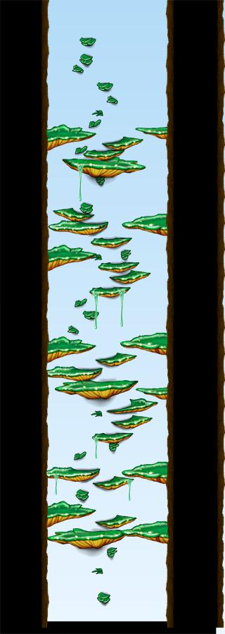
북쪽숲나무던전2Lv.10 · 몬스터 1종다크 스텀프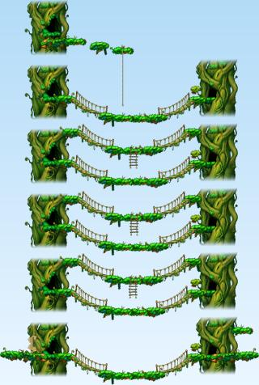
솟아오른나무3Lv.10~15 · 몬스터 2종다크 스텀프, 초록버섯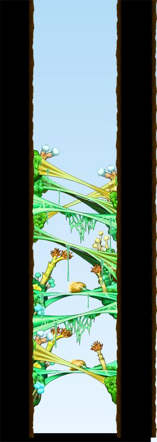
북쪽숲나무던전3Lv.12 · 몬스터 1종옥토퍼스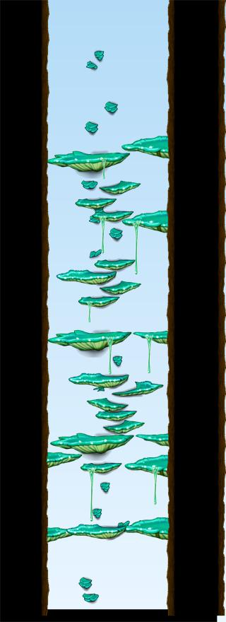
남쪽숲나무던전3Lv.15 · 몬스터 1종초록버섯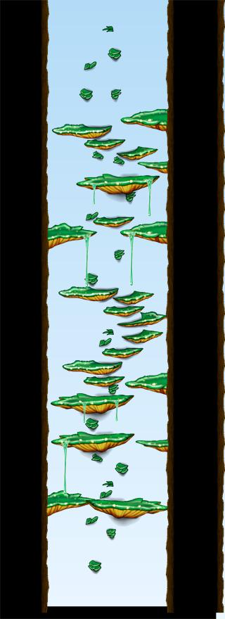
남쪽숲나무던전4Lv.15 · 몬스터 1종버블링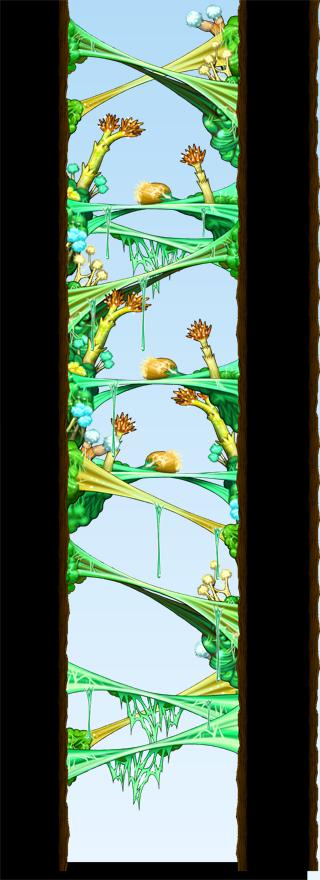
북쪽숲나무던전4Lv.15 · 몬스터 1종초록버섯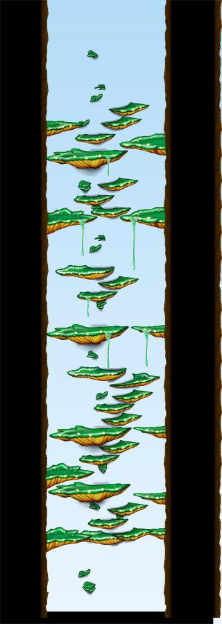
북쪽숲나무던전5Lv.15 · 몬스터 1종버블링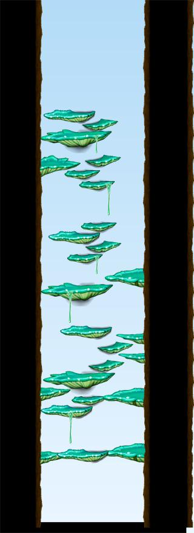
북쪽숲나무던전6Lv.17 · 몬스터 1종엑스텀프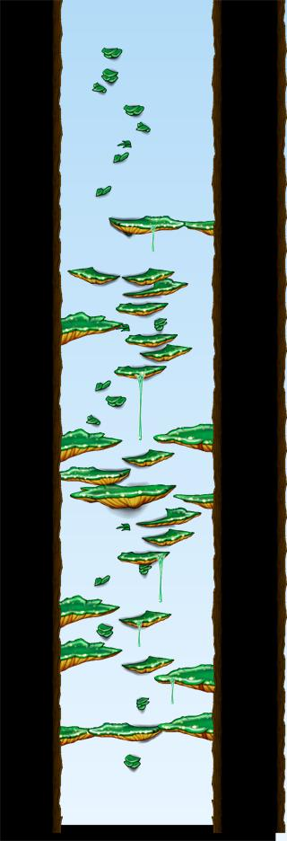
북쪽숲나무던전7Lv.22 · 몬스터 1종뿔버섯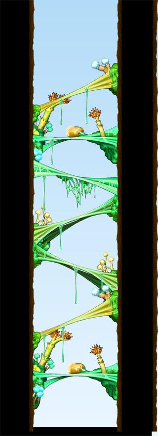
북쪽숲나무던전8Lv.27 · 몬스터 1종이블아이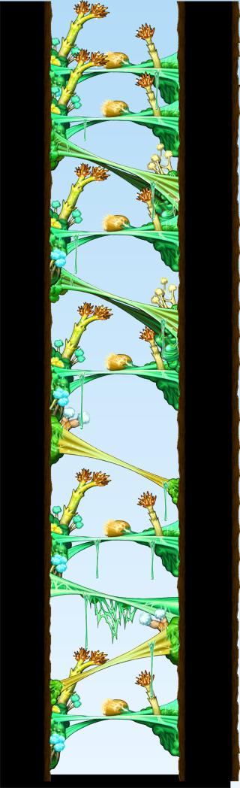
마법사의나무던전Lv.35 · 몬스터 2종커즈아이, 뿔버섯 마법사의나무던전Lv.35 · 몬스터 2종커즈아이, 뿔버섯
마법사의나무던전Lv.35 · 몬스터 2종커즈아이, 뿔버섯
 마법사의나무던전Lv.35 · 몬스터 2종커즈아이, 뿔버섯
마법사의나무던전Lv.35 · 몬스터 2종커즈아이, 뿔버섯
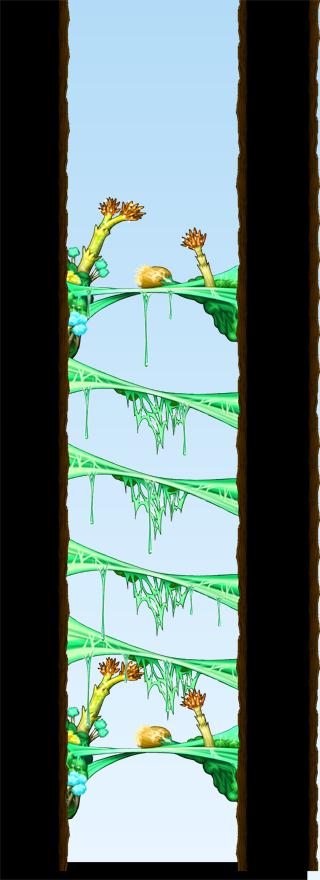
북쪽숲나무던전9Lv.35 · 몬스터 1종커즈아이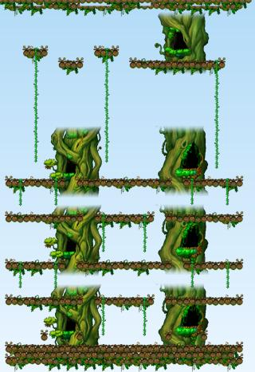
숲아래층Lv.37 · 몬스터 1종루팡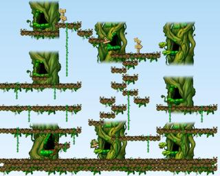
원숭이의숲1Lv.37~40 · 몬스터 2종루팡, 좀비루팡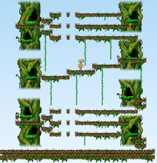
원숭이의숲2Lv.37~40 · 몬스터 2종루팡, 좀비루팡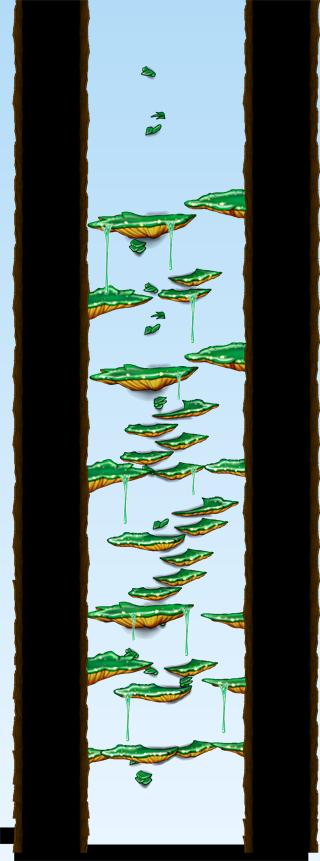
원숭이의숲나무던전1Lv.37 · 몬스터 1종루팡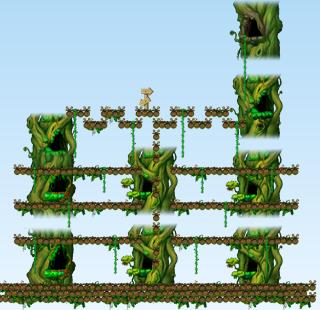
사악한기운의숲1Lv.40~55 · 몬스터 2종좀비루팡, 멜러디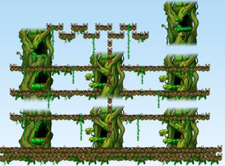
사악한기운의숲2Lv.40~55 · 몬스터 2종좀비루팡, 멜러디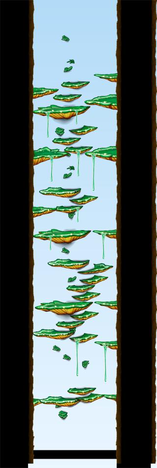
원숭이의숲나무던전2Lv.40 · 몬스터 1종좀비루팡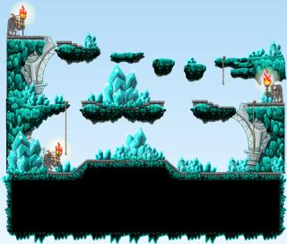
차원의세계Lv.80 · 몬스터 1종하인즈의 분신페리온 37곳
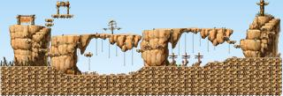
루팡의 숲Lv.2~4 · 몬스터 3종파란 달팽이, 스텀프, 빨간 달팽이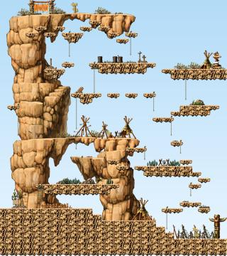
거대한 나무Lv.4~10 · 몬스터 2종스텀프, 다크 스텀프 동쪽바위산2Lv.4~10 · 몬스터 2종스텀프, 다크 스텀프 벽 너머Lv.4~22 · 몬스터 4종스텀프, 다크 스텀프, 엑스텀프 북쪽숲공터Lv.4~10 · 몬스터 2종스텀프, 다크 스텀프 어린 나무숲Lv.4~10 · 몬스터 2종스텀프, 다크 스텀프 외눈박이 도마뱀Lv.4 · 몬스터 2종스텀프, 빨간 달팽이 페리온 남쪽령Lv.4~10 · 몬스터 3종스텀프, 빨간 달팽이, 다크 스텀프 페리온 북쪽령Lv.4~10 · 몬스터 2종스텀프, 다크 스텀프 동쪽바위산3Lv.10~17 · 몬스터 2종다크 스텀프, 엑스텀프 와일드보어의 땅Lv.10 · 몬스터 1종다크 스텀프 초록나무줄기Lv.10 · 몬스터 1종다크 스텀프 먼지바람 언덕Lv.15~17 · 몬스터 2종초록버섯, 엑스텀프 동쪽바위산4Lv.17~22 · 몬스터 2종엑스텀프, 다크 엑스텀프 동쪽바위산5Lv.17~22 · 몬스터 2종엑스텀프, 다크 엑스텀프 작은 바위길Lv.17~22 · 몬스터 2종엑스텀프, 다크 엑스텀프 나무줄기둥지1Lv.19~23 · 몬스터 2종고스텀프, 우드 마스크 유적 발굴지2Lv.19~24 · 몬스터 3종고스텀프, 우드 마스크, 스톤 마스크 동쪽바위산6Lv.22~25 · 몬스터 2종다크 엑스텀프, 와일드보어 와일드보어의 땅Lv.22~35 · 몬스터 3종다크 엑스텀프, 와일드보어, 주니어 부기 와일드보어의 땅2Lv.22~25 · 몬스터 2종다크 엑스텀프, 와일드보어 큰 바위길Lv.22~24 · 몬스터 2종다크 엑스텀프, 좀비버섯 유적 발굴지3Lv.23~24 · 몬스터 2종우드 마스크, 스톤 마스크 동쪽바위산7Lv.25 · 몬스터 1종와일드보어 아이언보어의 땅Lv.25~45 · 몬스터 2종와일드보어, 아이언보어 전사의바위산Lv.35 · 몬스터 2종파이어보어, 루팡 전사의바위산Lv.35 · 몬스터 2종파이어보어, 루팡 전사의바위산Lv.35 · 몬스터 2종파이어보어, 루팡 유적의 무덤1Lv.44~47 · 몬스터 2종스켈독, 머미독 유적의 무덤2Lv.44~57 · 몬스터 3종스켈독, 머미독, 스켈레톤 사병 유적의 무덤3Lv.44~57 · 몬스터 3종스켈독, 머미독, 스켈레톤 사병 제1군영Lv.57~63 · 몬스터 2종스켈레톤 사병, 스켈레톤 장교 제2군영Lv.57~63 · 몬스터 2종스켈레톤 사병, 스켈레톤 장교 제3군영Lv.57~63 · 몬스터 2종스켈레톤 사병, 스켈레톤 장교 유적의 낭떠러지Lv.63~73 · 몬스터 2종스켈레톤 장교, 스켈레톤 지휘관 유적의 무덤4Lv.63~73 · 몬스터 2종스켈레톤 장교, 스켈레톤 지휘관 차원의세계Lv.80 · 몬스터 1종주먹펴고 일어서의 분신커닝시티 35곳
리스항구 7곳
슬리피우드 43곳
플로리나 비치 6곳
노틸러스 4곳

에레브 11곳
에레브 11곳
오시리아 대륙 73곳
오르비스 33곳
엘나스 40곳
루디브리엄 118곳
루디브리엄 68곳
지구방위본부 37곳
아랫마을 13곳
아쿠아로드 22곳
아쿠아리움 22곳
리프레 48곳
리프레 48곳
무릉도원 31곳
무릉 20곳
백초마을 11곳
니할 사막 39곳
아리안트 18곳
마가티아 21곳
시간의 신전 15곳
시간의 신전 15곳
엘린 숲 9곳
엘린 숲 9곳
해외 지역 94곳
일본 버섯신사 12곳
일본 카에데성 17곳
일본 쇼와마을 10곳
싱가포르 12곳
싱가포르 울루시티 9곳
말레이시아 11곳
뉴리프시티 12곳
팬텀포레스트 11곳
파티퀘스트·특수 지역 58곳
슬리피우드 3곳
노틸러스 1곳
아랫마을 1곳
마가티아 1곳
루팡의 숲 1곳
추락주의 1곳
기타 맵 12곳
헤네시스 북쪽언덕 1곳
엘리니아남쪽필드 1곳
에레브 3곳
빅토리아 이벤트 맵 5곳
몬스터 카니발 6곳
버려진 탑 8곳
여신의 탑 11곳
 여신의 탑<객실 301호>Lv.57 · 몬스터 1종여신 탑의 샐리온
여신의 탑<객실 302호>Lv.57 · 몬스터 1종여신 탑의 그류핀
여신의 탑<객실 303호>Lv.57 · 몬스터 1종여신 탑의 라이오너
여신의 탑<정원>Lv.59 · 몬스터 1종여신 탑의 네펜데스
여신의 탑<중앙탑>Lv.60 · 몬스터 1종플라잉 부기
여신의 탑<감옥1>Lv.65 · 몬스터 1종여신 탑의 루이넬
여신의 탑<감옥2>Lv.65 · 몬스터 1종여신 탑의 루이넬
여신의 탑<감옥3>Lv.65 · 몬스터 1종여신 탑의 루이넬
여신의 탑<객실 301호>Lv.57 · 몬스터 1종여신 탑의 샐리온
여신의 탑<객실 302호>Lv.57 · 몬스터 1종여신 탑의 그류핀
여신의 탑<객실 303호>Lv.57 · 몬스터 1종여신 탑의 라이오너
여신의 탑<정원>Lv.59 · 몬스터 1종여신 탑의 네펜데스
여신의 탑<중앙탑>Lv.60 · 몬스터 1종플라잉 부기
여신의 탑<감옥1>Lv.65 · 몬스터 1종여신 탑의 루이넬
여신의 탑<감옥2>Lv.65 · 몬스터 1종여신 탑의 루이넬
여신의 탑<감옥3>Lv.65 · 몬스터 1종여신 탑의 루이넬
독안개의 숲 3곳
기타 15곳
PC방 (프리미엄 로드) 14곳
아모리아 1곳
조건에 맞는 맵이 없어요.
대륙은 맵 번호, 마을은 그 맵의 "가까운 마을"(돌아가는 마을) 기준으로 묶었어요. 해외 지역은 일본·싱가포르·말레이시아·뉴리프시티·팬텀포레스트 맵이에요. 한국어 이름이 없는 해외 맵은 영어 이름을 옮겨 적었어요. 맵 정보는 원본 게임 데이터(GMS 83, 카에데성·울루시티는 GMS 90) 기준이라 메이플랜드와 다를 수 있어요.